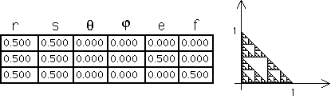
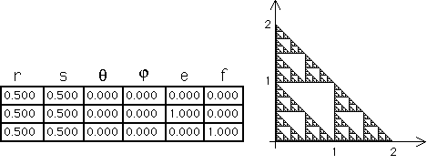

| Here are the familiar IFS rules for the right Sierpinski gasket, together with the fractal it generates. |
|  |
| Here we've multiplied all the e and f values by 2. Note how the fractal has changed. |
|  |
| In general, multiplying all the e and f values by the same (positive) number just scales the fractal by that factor. |
| Note the r and s values tell what fraction of the whole shape each piece occupies. |
| The relative values of e and f tell where the pieces are located with respect to one another. |
| The actual values of the e and f determine the scale of the fractal. |
Return to Measuring IFS Pieces.